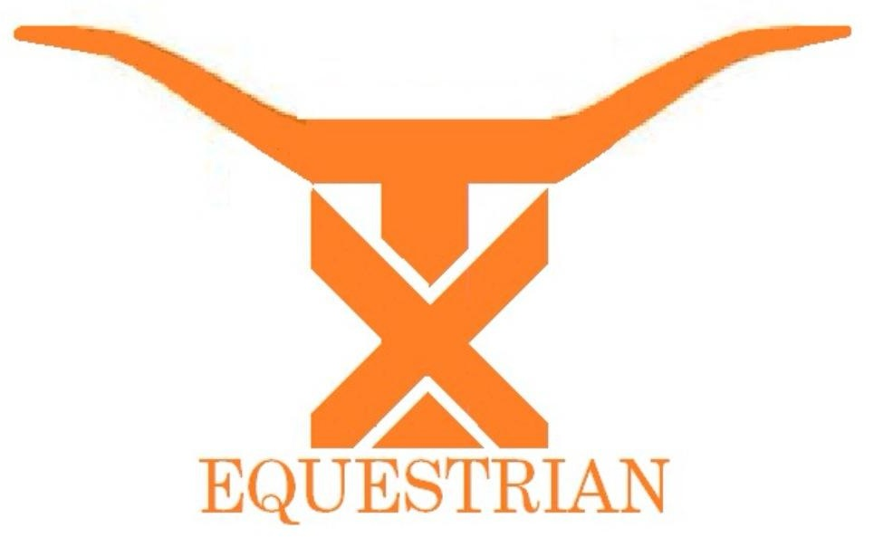

Longhorn Equestrian
Texas Equestrian Team
longhornequestrian@gmail.com
What we do

The Texas Equestrian Team competes through the Intercollegiate Horse Show Association (IHSA). The team rides and competes in hunt seat equitation both on the flat and over fences. Each year the team competes at different horse shows within our region in which both the team and the individual may gain points towards competing at Regionals or Zone Finals.
At IHSA competition, riders participate in a random draw from a pool of skill-matched horses. Competitors, go into the show ring with no warm-up on the horse that they have drawn. This is the epitome of "catch riding". Riders are judged on their equitation and handling of the horse.